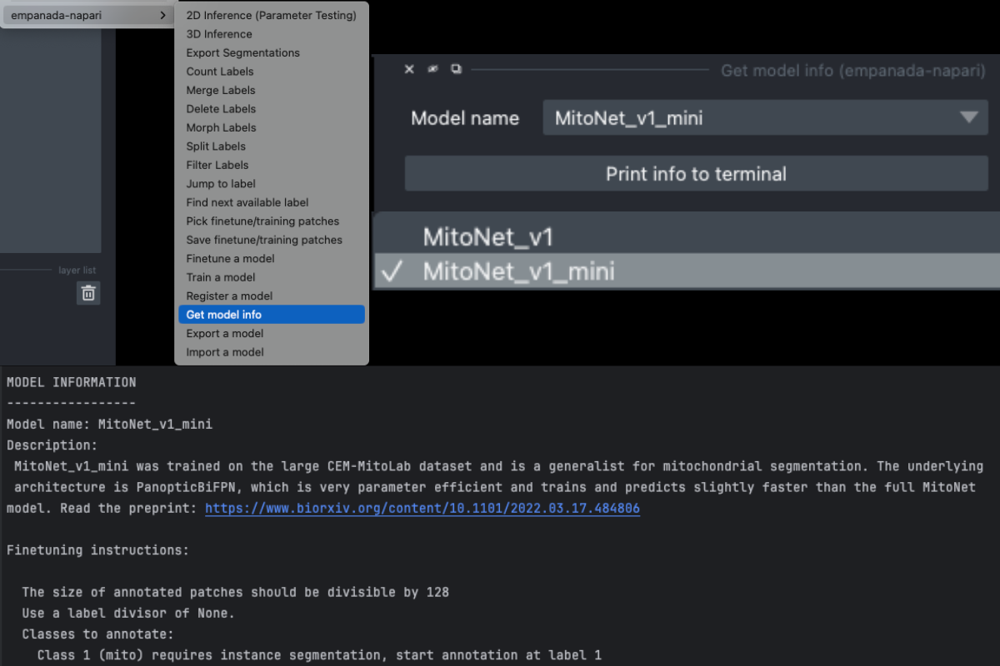
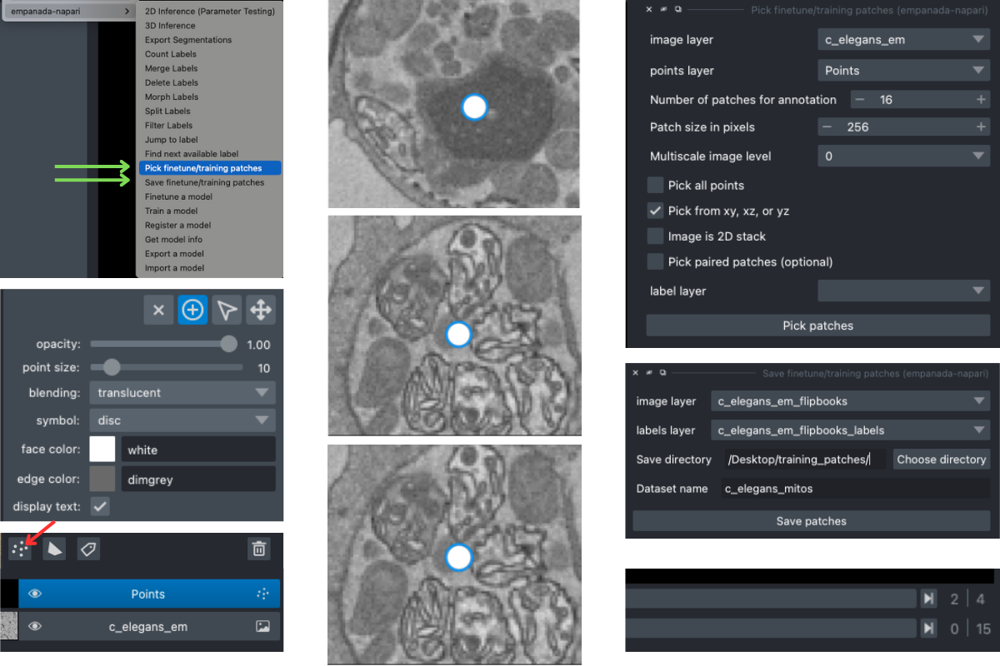
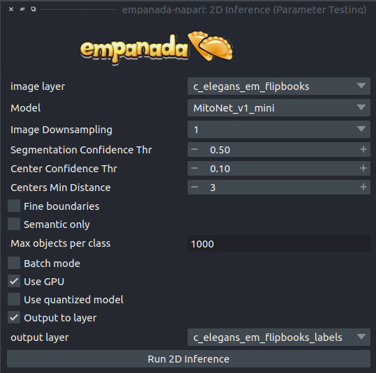
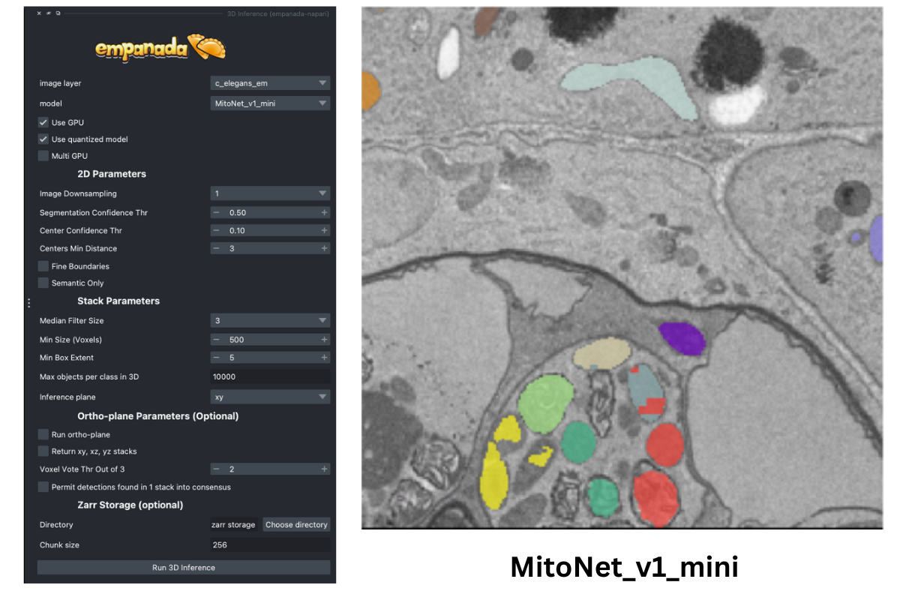
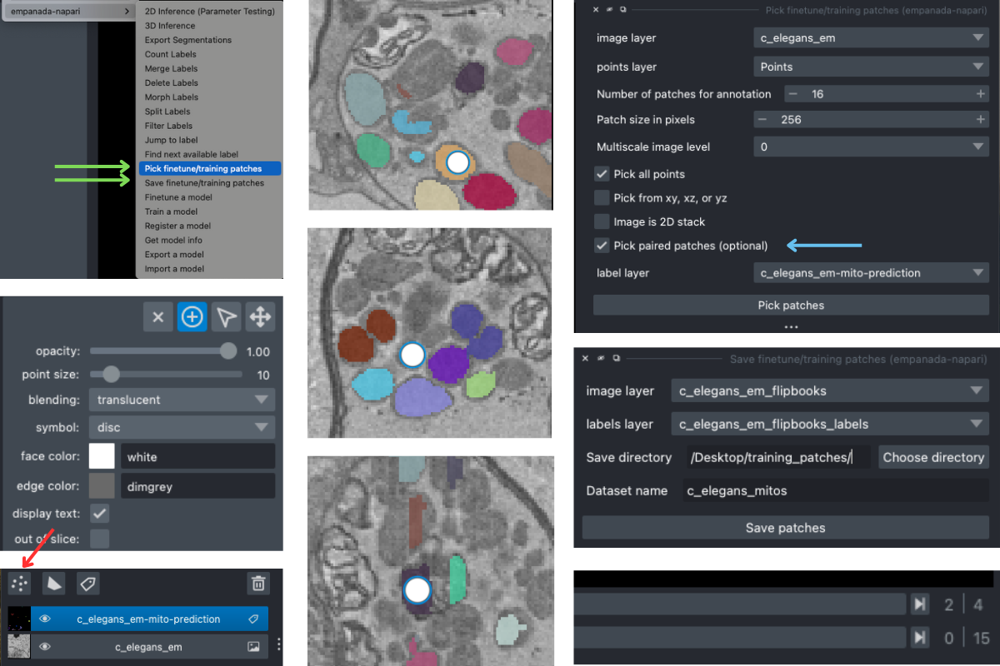
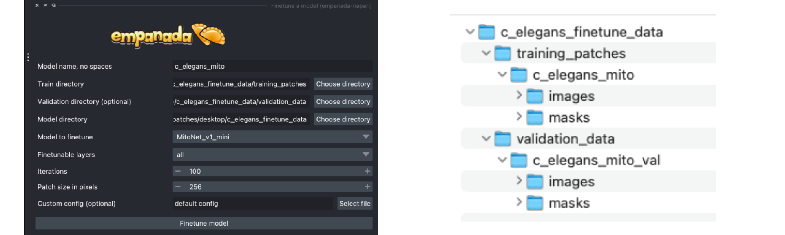
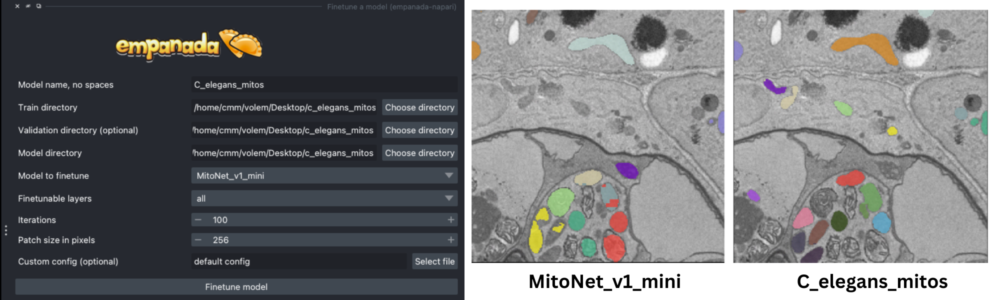

Finetuning an existing model#
Finetuning a model involves modifying different parts of a pretrained model to better suit the characteristics of your data.
To get started, download an example C. Elegans FIBSEM dataset and some instance annotations. Unzip the annotations.
If you installed napari into a virtual environment as suggested in Installation, be sure to activate it:
conda activate empanada
Launch napari:
napari
Loading C. Elegans Data#
Drag and drop the grayscale c_elegans_em.tif file into the napari window.
Choosing a model#
First, decide which model to finetune by using the Get model info module, selecting a model from the dropdown list, and clicking the “Print info to terminal” button. For this tutorial let’s have a look at the MitoNet_v1_mini model:
{kind=link}

Looking at the finetuning instructions tells us that this model expects image patches that are divisible by 128 and that it segments a single instance class: mitochondria. It also tells us that we should start annotation with label 1 for the first mitochondrion and increment by 1 for each subsequent mitochondrion.
Picking training data#
Note
With the newest updates to empanada-napari, picking finetuning/training data can be done in two ways. You can either select the finetune/training patches first and then create the annotations, OR you can create the patches after labels have been created. See the two sections below to see examples.
Creating patches first#
Open the Pick finetune/training patches and Save finetune/training patches modules (green arrows). It’s possible to pick patches randomly from the entire volume or from a particular ROI by placing points. For example, let’s place 2 points on areas that we think may be difficult to segment. First, create a points layer (red arrow bottom left), switch to point add mode (blue circle with + sign in middle left), and then click to place points in the viewer. Now, we’ll use the Pick finetune/training patches module to pick 16 patches of size 256x256, because this data has isotropic voxels we’ll also check the “Pick from xy, xz, or yz” box. The first 2 patches selected will be from the points that we placed, the other 14 patches will be randomly picked from the volume. To create patches from only the areas that you have placed points, select the Pick all points option (see note).
Note
This will overwrite the number of patches specified if the number of points does not match the number of points placed! Meaning, if you want to create 16 patches but only placed 2 points and have this option selected, only 2 patches will be created!
For 3D datasets, the patches are output as flipbooks (short stacks of 5 images). Only the middle (third image) in each flipbook should be annotated, the other images are there to provide some 3D context. At the bottom of the viewer you’ll see that there are two sliders. The top one scrolls through the stack of images and the bottom one scrolls through the flipbooks. Make sure all annotations are made on slice “2” of the top slider (bottom right panel).
See the next section for how to annotate flipbooks. Once all images have been annotated, select the appropriate flipbook image and corresponding labels layer then click the “Save patches” button (top right panel).
Note
Finetuning requires at least 16 training patches to be annotated. They can be completed in batches though, the Save finetune/training patches module will append them to an existing dataset if the directory and dataset name match.
{kind=link}

Annotating training data#
To avoid confusion it’s best to hide any layers other than the flipbook image and labels layer.
It’s possible to use an existing model to get initial segmentation for cleanup. To do this, open the 2D Inference (Parameter Testing) module, check the “Output to layer” box, and select the flipbook labels layer “c_elegans_em_flipbooks_labels”. Make sure you’re on the third slice of a flipbook and click “Run 2D Inference”. This will insert the segmentation into the labels layer. You can then paint and erase labels following Proofreading in 2D.
{kind=link}

Note
If you use the settings shown in the figure above, you’ll notice that the segmentation labels start at 1001. This is OK when the model only has one instance class, but if you have multiple classes then you’ll have to make sure that the “Max objects per class” field is equal to the label divisor printed from Get model info. The relevant line says, “Use a label divisor of {label_divisor}”. The default label divisor for models trained in empanada is 1000. Anytime the label divisor is “None” you don’t have to worry about which labels you use so long as they’re unique for each instance.
Creating patches from paired data#
To create finetune/training patches from paired data, you can either use the initial results after running inference or you can use Ground Truth labels. For this example, let’s use the annotations we get after running 3D inference.
To get an idea of how well the base MitoNet_mini model performs on this dataset, let’s run 3D Inference on the c_elegans_em.tif image.

As you can see, the model does “okay” but it struggles in more complicated areas. To pick finetuning patches from these particular ROIs , open the Pick finetune/training patches module and create a new points layer (red arrow). Next, switch to point add mode (blue circle with + sign in middle left), and then click to place points in the viewer. Scroll through the stack and place a total of 16 points. Now, we’ll use the Pick finetune/training patches module (green arrow) to pick 16 patches of size 256x256, we’ll also select the Pick paired patches option (blue arrow) to pair the labels layer.
The patches are output as flipbooks (short stacks of 5 images). Only the middle (third image) in each flipbook should be annotated (or in this case proofread), the other images are there to provide some 3D context. At the bottom of the viewer you’ll see that there are two sliders. The top one scrolls through the stack of images and the bottom one scrolls through the flipbooks. Make sure all edits to annotations are made on slice “2” of the top slider (bottom right panel).
Proofreading training data#
To proofread (or clean up) the labels, follow the Proofreading in 2D in the 2D Inference Tutorial. Remember that only the middle image will need to be edited!

Once you have finished making corrections, use the Save finetune/training patches module to save the flipbook images and their corresponding labels layer (right middle panel).
Finetuning the model#
Using the annotations that you created, finetuning a model is simple. We’ll use the same annotations for training and validation, though you could easily create a separate validation set if desired by following the steps from the Creating patches from paired data section above (see note).
Note
Instead of using the labels created by MitoNet_mini, drag and drop the annotations you downloaded earlier and select patches from there. See an example file structure with separate validation data below.

Setting the “Finetubale layers” to “all” means that all encoder layers will be finetuned. This generally gives better results, but training with fewer finetunable layers will require less memory and time. 100 training iterations is a good starting point, but increasing the number of iterations may yield better results. For a fairly general model like MitoNet, training for more than 500 iterations shouldn’t be necessary unless you’ve annotated a lot of images.
{kind=link}

Once finetuning finishes, the model will appear in dropdowns across all other modules in the plugin. If it doesn’t, close the module and reopen it. Unsurprisingly, we see that a finetuned model works much better on this data than vanilla MitoNet. See Inference on 2D images and Inference on volumetric data for details on how to use the model for inference.